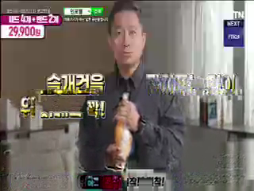
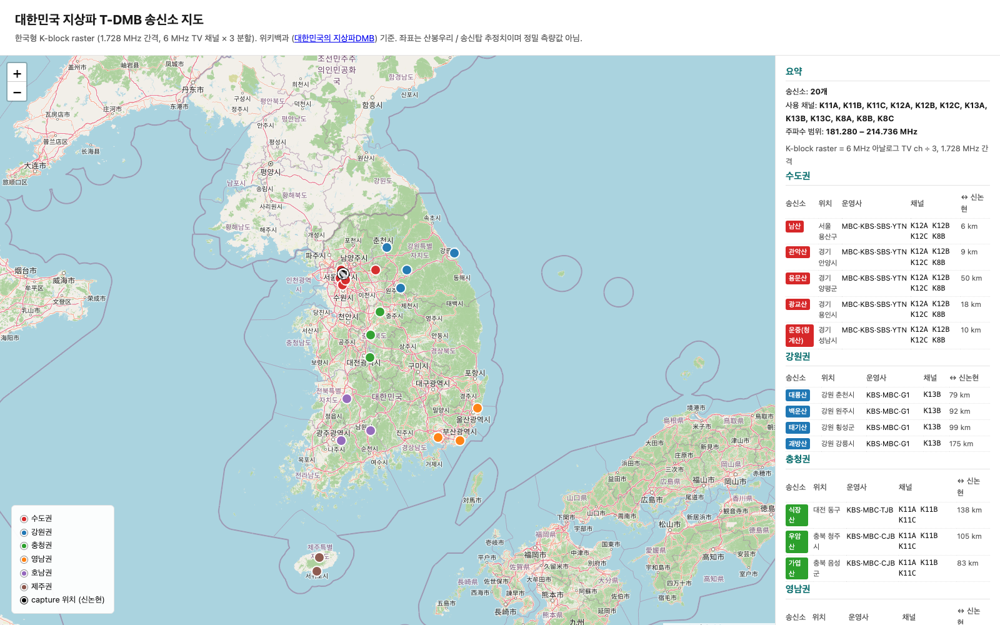

airspy-mini-dmb — Open-source Korean T-DMB receiver
한국형 지상파 T-DMB 신호를 SDR 로 종단간 수신·복조·디코드하는 Python 패키지. K-block 채널 raster, sync-aligned RS+TI, MPEG-4 SL header layout, AVCC location 등 영문권에 처음 공개되는 운용사 단계 deployment 디테일 + CC-BY 참조 캡처 + JSON 메타데이터 사이드카.

실제 K8B 신호를 SDR + 본 코드만으로 디코드한 H.264 IDR 프레임 두 장. 가장자리 매크로블록 노이즈는 RS(204,188) 정정 한계(~13%) 를 넘은 블록의 흔적 — FFmpeg 매크로블록-수준 오류 은닉의 시각화.
전국 T-DMB 송신소 지도 (인터랙티브)

21 개 T-DMB 송신소를 6 개 권역으로 색상 분류. K8B 수도권 5 송신소 (남산·관악산·용문산·광교산·운중) 에서 본 프로젝트 reference capture 위치 (신논현) 까지 SFN 도달 경로를 빨간 점선으로 시각화. 각 송신소 팝업: 위치 / 운영사 / 채널·주파수 / 신논현까지 km.
주요 발견 / 기여 (영문권 첫 공개)
- 한국 K-block raster: 6 MHz VHF TV 채널 ÷ 3 = 1.728 MHz 간격
(ETSI 표준 1.712 MHz 와 다름).
eti-cmdlineband-handler 패치 필요. - Sync-aligned Forney 디인터리버: 0x47 phase 정렬을 deinterleaver BEFORE 에 해야 함. K8B 캡처에서 0% → 87.3% RS 성공률.
- 9-byte SL packet header: 한국 운용사의 SLConfigDescriptor 프로파일
(au_start=au_end=dts=cts=1, timeStampLength=33) 의 결과. PES body 첫 byte 가 항상
0xCF. 3,135 PES 검증. - AVCDecoderConfigurationRecord 위치: 표준 MPEG-4 Systems 의 OD 스트림 (PID 0x111) 이 아니라 SD/BIFS 스트림 (PID 0x112) 에 임베드. K8B YTN DMB 운용사 선택.
- SFN multipath shallow nulls: 신논현 등 metro 위치에서 5 K8B SFN 송신소 가 null 구간을 채워 envelope dip 이 ~0.72-0.82 μ (교과서 ~0.1-0.3 μ 와 다름). Adaptive threshold 필수.
리소스 / 링크
🦀 dab-rs (sister project)
같은 receiver chain 의 순수 Rust 재구현 — DAB Mode I OFDM demodulator 포함
📜 Paper (영문 long version)
arXiv eess.SP 제출 예정. Black-box rediscovery framing + ETRI 2004 인용.
📡 Reference capture (CC-BY)
k8b_100pct.eti (30 MB) + k8b_strong.iq (240 MB, Git LFS).
30-초 시연
git clone https://github.com/zobithecat/airspy-mini-dmb.git
cd airspy-mini-dmb
git lfs pull
python tools/decode_video.py data/captures/k8b_100pct.eti \
--subch 1 --out-mp4 /tmp/k8b.mp4 --idr-thumbnails /tmp/idr
# → /tmp/k8b.mp4 (2.4 MB, H.264 Baseline 320x240, 25 fps)
# → /tmp/idr/idr_*.png (20 IDR thumbnails)
RF 하드웨어 없이도 검증 가능 — reference 캡처가 CC-BY 로 공개되어 있어 전 세계 어디서든 한국 K-block 신호의 종단간 디코드를 재현 가능.
검증 / 캡처 통계
| 캡처 | SNR | RS 성공 | 용도 |
|---|---|---|---|
k8b_100pct.eti | ~13 dB | 87.3 % (22652/25953) | 비디오 디코드 oracle |
k8b_strong.iq | ~5 dB (cu8) | 0 / 2587 | dab-rs OFDM oracle (Stage 1-7) |
k8b_rust.iq | ~7 dB | 0 / 2587 | 초기 OFDM sync 시도 (퇴역) |
저자 / 라이선스
Seonggeun Yoo (zobithecat) — homepage · GitHub
코드: MIT · 캡처 데이터: CC-BY-4.0 · Paper 소스: CC-BY-4.0